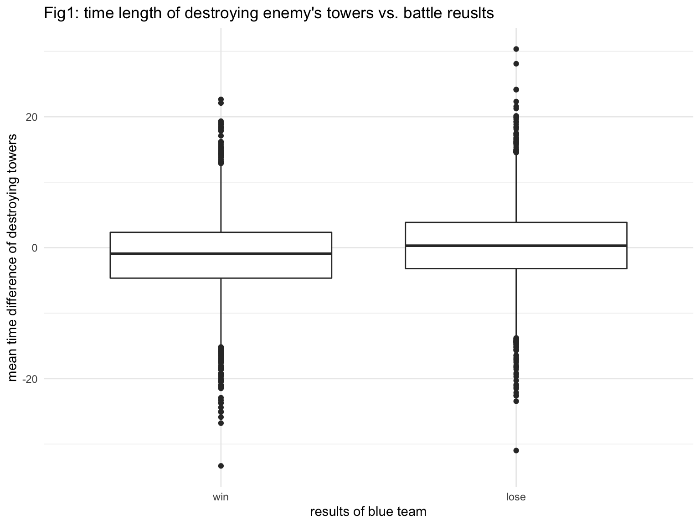
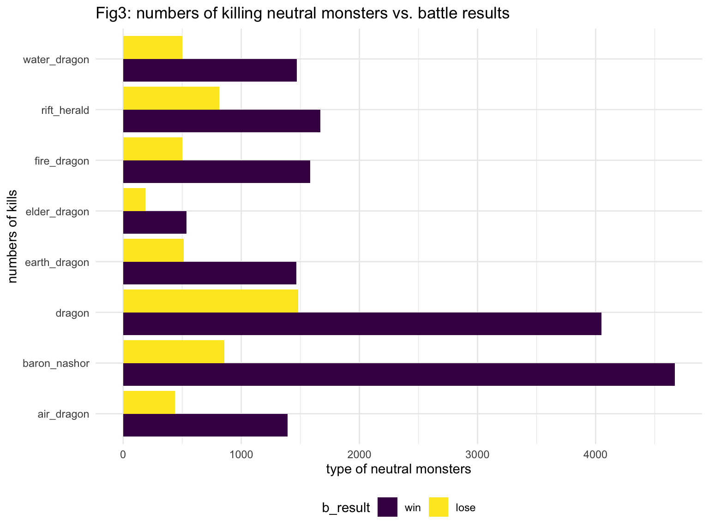
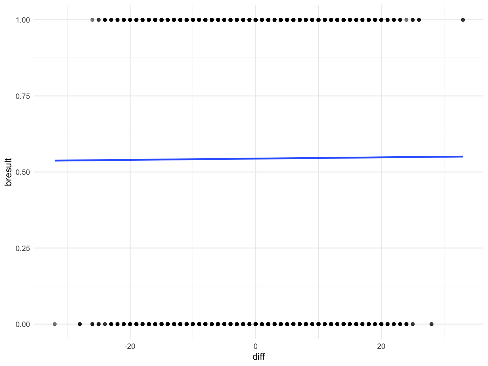

leagueoflegends =
read_csv(file = "./data/LeagueofLegends.csv") %>%
janitor::clean_names() %>%
mutate(address = str_remove(address, "http://matchhistory.na.leagueoflegends.com/en/#match-details/TRLH1/")) %>%
select(address, year, b_result)tower =
read_csv(file = "./data/structures.csv") %>%
janitor::clean_names() %>%
filter(type == "OUTER_TURRET") %>%
mutate(
address = str_remove(address, "http://matchhistory.na.leagueoflegends.com/en/#match-details/TRLH1/")
)calculate the mean time, group by match id
tower =
tower %>%
group_by(address, team) %>%
mutate(
outer_tower = mean(time, na.rm = TRUE)
) %>%
select(-lane, -time, -type) %>%
distinct() %>%
pivot_wider(
names_from = team,
values_from = outer_tower
) %>%
mutate(outer_mean_diff = bTowers - rTowers)join with the leagueoflegend dataset
merge_file =
left_join(leagueoflegends, tower, by = "address") %>%
mutate(b_result = recode_factor(b_result, "1" = "win", "0" = "lose"))some visualizations
merge_file %>%
ggplot(aes(x = b_result, y = outer_mean_diff)) +
geom_boxplot()
bTower means the mean time blue team destroy enemy’s outer towers among three lanes, rTower means the mean time red team destroy enemy’s outer towers among three lanes. We care about the impact of different of mean time between two groups. from the plot, we can see that if bTower is smaller than rTower (meaning that blue teams destroy red teams’ outer tower faster) there will be a higher win rate among blue teams
gold =
read_csv(file = "./data/gold.csv") %>%
janitor::clean_names() %>%
filter(type == "golddiff") %>%
mutate(
address = str_remove(address, "http://matchhistory.na.leagueoflegends.com/en/#match-details/TRLH1/")
) %>%
pivot_longer(
min_1:min_95,
names_to = "min",
names_prefix = "min_",
values_to = "gold"
) %>%
drop_na()
gold_ave =
gold %>%
group_by(address) %>%
summarize(
golddiff_mean = mean(gold)
)combine
merge_file = left_join(merge_file, gold_ave, by = "address")Plot
merge_file %>%
ggplot(aes(x = b_result, y = golddiff_mean)) +
geom_boxplot()monster = read_csv("./data/monsters.csv")
str(monster)## Classes 'spec_tbl_df', 'tbl_df', 'tbl' and 'data.frame': 44248 obs. of 4 variables:
## $ Address: chr "http://matchhistory.na.leagueoflegends.com/en/#match-details/TRLH1/30030?gameHash=fbb300951ad8327c" "http://matchhistory.na.leagueoflegends.com/en/#match-details/TRLH1/30054?gameHash=055b17da8456fdc8" "http://matchhistory.na.leagueoflegends.com/en/#match-details/TRLH1/30054?gameHash=055b17da8456fdc8" "http://matchhistory.na.leagueoflegends.com/en/#match-details/TRLH1/30054?gameHash=055b17da8456fdc8" ...
## $ Team : chr "bDragons" "bDragons" "bDragons" "bDragons" ...
## $ Time : num 37.3 32.5 26.2 19.1 24.6 ...
## $ Type : chr "DRAGON" "DRAGON" "DRAGON" "DRAGON" ...
## - attr(*, "spec")=
## .. cols(
## .. Address = col_character(),
## .. Team = col_character(),
## .. Time = col_double(),
## .. Type = col_character()
## .. )summary(monster)## Address Team Time Type
## Length:44248 Length:44248 Min. : 3.082 Length:44248
## Class :character Class :character 1st Qu.:16.448 Class :character
## Mode :character Mode :character Median :23.617 Mode :character
## Mean :24.169
## 3rd Qu.:30.842
## Max. :92.364monster =
monster %>%
filter(Team %in% c("bDragons", "bBarons", "bHeralds")) %>%
group_by(Address, Type) %>%
summarize(number = n()) %>%
pivot_wider(
names_from = Type,
values_from = number
)
monster[is.na(monster)] = 0
monster = monster %>%
janitor::clean_names()merge
merge_file = left_join(merge_file, monster, by = "address")visualizations
origin_df = read_csv("./data/LeagueofLegends.csv") %>% janitor::clean_names()
blank_theme <- theme_minimal() +
theme(
axis.title.x = element_blank(),
axis.title.y = element_blank(),
panel.border = element_blank(),
panel.grid = element_blank(),
axis.ticks = element_blank(),
plot.title = element_text(size = 14, face = "bold")
)
origin_df %>%
select(b_result, r_result) %>%
mutate(b_wins = sum(b_result), r_wins = sum(r_result), total = b_wins + r_wins) %>%
select(b_wins:total) %>%
pivot_longer(
b_wins:r_wins,
names_to = "team",
values_to = "game_won"
) %>%
filter(row_number() <= 2) %>%
ggplot(aes(x = "", y = game_won, fill = team)) +
geom_bar(stat = "identity", width = 1) +
geom_text(aes(label = percent(game_won / total)), position = position_stack(vjust = 0.5)) +
coord_polar("y") +
labs(
title = "Win rates of Blue and Red teams across all years"
) +
scale_fill_manual(labels = c("Blue", "Red"), values = c("cadetblue1", "coral1")) +
blank_theme +
theme(axis.text.x = element_blank())
kills <- read_csv("./data/kills.csv")
## set key
key <- pull(origin_df,address) %>% as_tibble()
## merged the kills.csv with key
colnames(key) <- "address"
kills <- kills %>% janitor::clean_names()
kills_all <- left_join(key, kills, by = "address")
## calculate kill difference between blue team and red team
kills_diff <- kills_all %>%
group_by(address,team) %>%
select(address,team) %>%
summarize(n = n()) %>%
pivot_wider(
names_from = "team",
values_from = "n") %>%
mutate(diff = bKills - rKills)
## extract bResult from dataset
outcome <- pull(origin_df,b_result) %>% as_tibble()
colnames(outcome) <- "bresult"
df <- bind_cols(kills_diff,outcome)do some visualization
df %>% ggplot(aes(x = diff,y = bresult)) +
geom_point()df %>% ggplot((aes(x = bresult,y = diff,group = bresult))) +
geom_boxplot() +
coord_flip()df %>% ggplot(aes(x = diff,y = bresult)) +
geom_point(alpha = 0.5) +
stat_smooth(method = "glm", se = FALSE, fullrange = TRUE,
method.args = list(family = binomial))